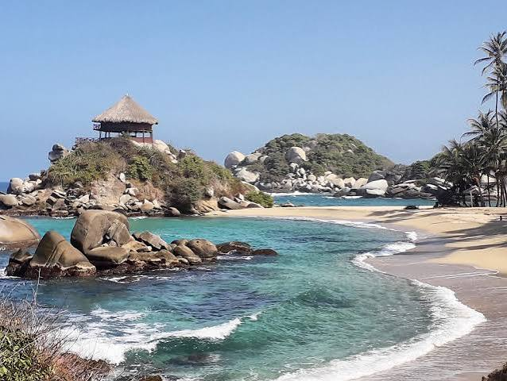
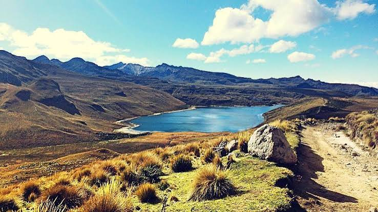
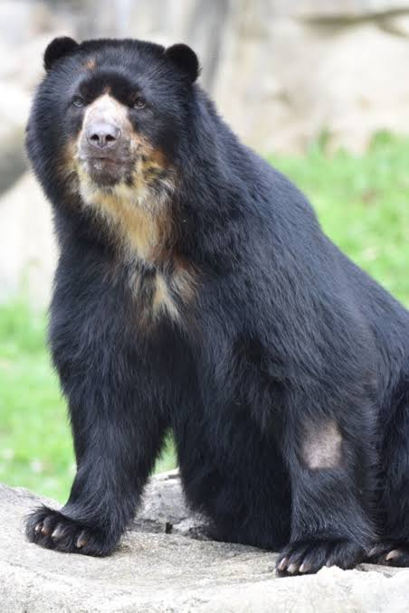

Descubre la Biodiversidad de Colombia
Explora los santuarios naturales más imponentes y conéctate con la fauna y flora protegida de nuestro territorio. Colombia es reconocida a nivel mundial como uno de los países más megadiversos del planeta, albergando una cantidad excepcional de especies endémicas y ecosistemas vitales que son fundamentales para la regulación del clima y el equilibrio ambiental de toda la región americana.
Santuarios Destacados (Sección Grid)

Parque Nacional Tayrona
Ubicado en las faldas de la Sierra Nevada de Santa Marta, este parque ofrece un encuentro único entre la selva tropical húmeda y las playas vírgenes del mar Caribe. Es un santuario invaluable de biodiversidad terrestre y marina que sirve de hogar a diversas comunidades indígenas ancestrales que protegen su territorio sagrado.

Parque Los Nevados
Situado en el corazón del eje cafetero, este parque protege imponentes ecosistemas de páramo y majestuosos picos cubiertos de nieves perpetuas. Sus complejos lagunares y extensos bosques de frailejones actúan como inmensas esponjas naturales de agua, siendo los principales reguladores del recurso hídrico para millones de habitantes de la región andina.
Fauna Protegida en Conservación (Sección Flex)

El Jaguar
Es el felino más grande de todo el continente americano y se considera una especie paraguas esencial. Su presencia en las selvas protegidas garantiza la salud general del ecosistema, controlando las poblaciones de otras especies y manteniendo el equilibrio biológico natural de los bosques tropicales colombianos.
El Cóndor
Esta ave emblemática de la cordillera de los Andes representa la libertad de nuestras cumbres más altas. Actualmente se encuentra catalogada bajo un estado crítico de conservación, lo que ha impulsado la creación de programas estrictos de monitoreo biológico y reintroducción en áreas naturales protegidas.

Oso de Anteojos
Es la única especie de oso nativa de Sudamérica. Habita en los densos y húmedos bosques de niebla de los Andes colombianos y desempeña un rol ecológico crucial como sembrador del bosque, debido a su capacidad para dispersar semillas a lo largo de grandes extensiones de terreno de alta montaña.